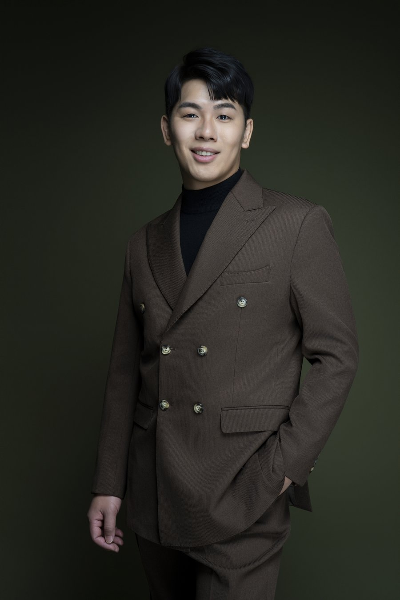
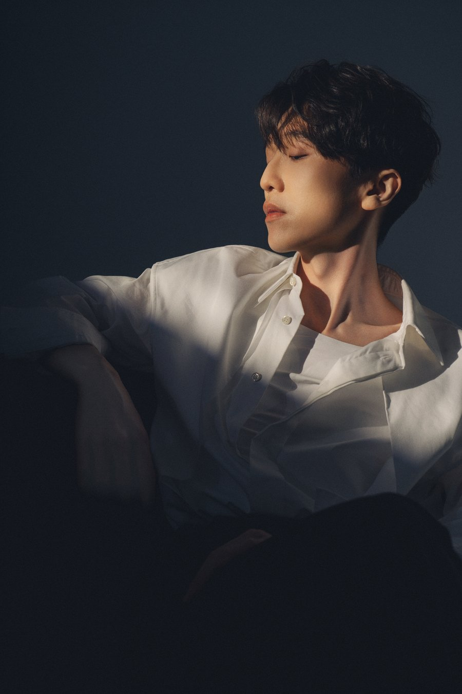
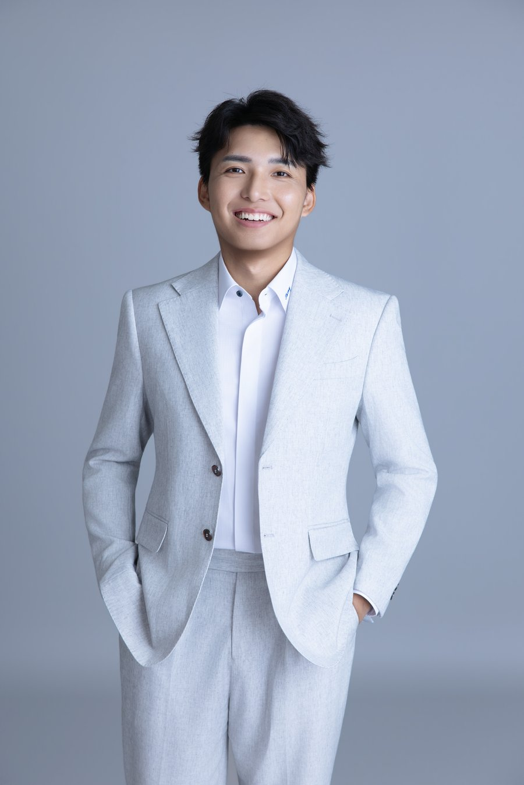
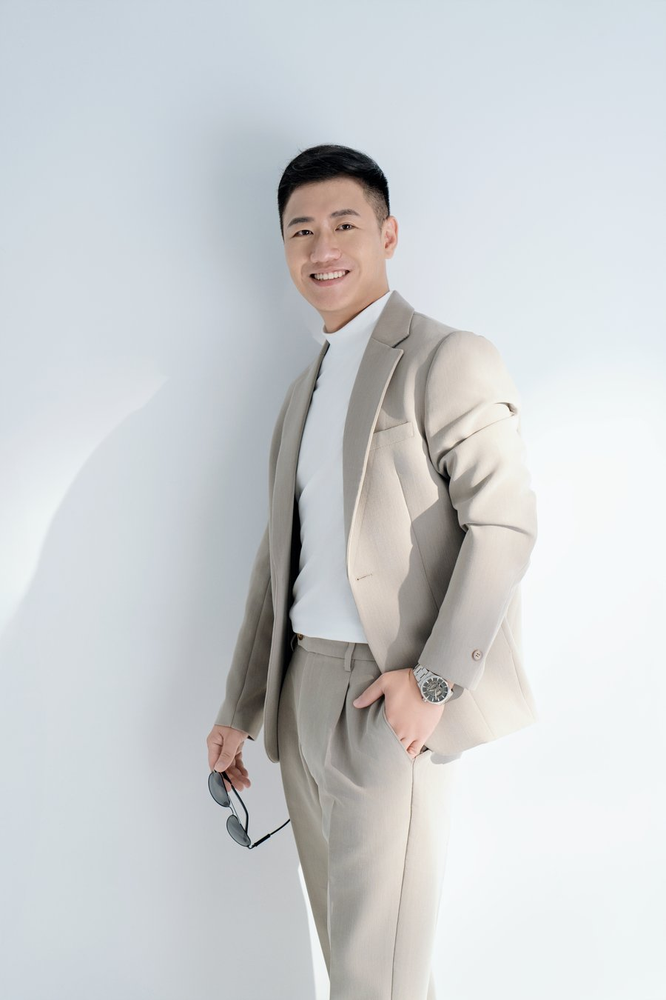
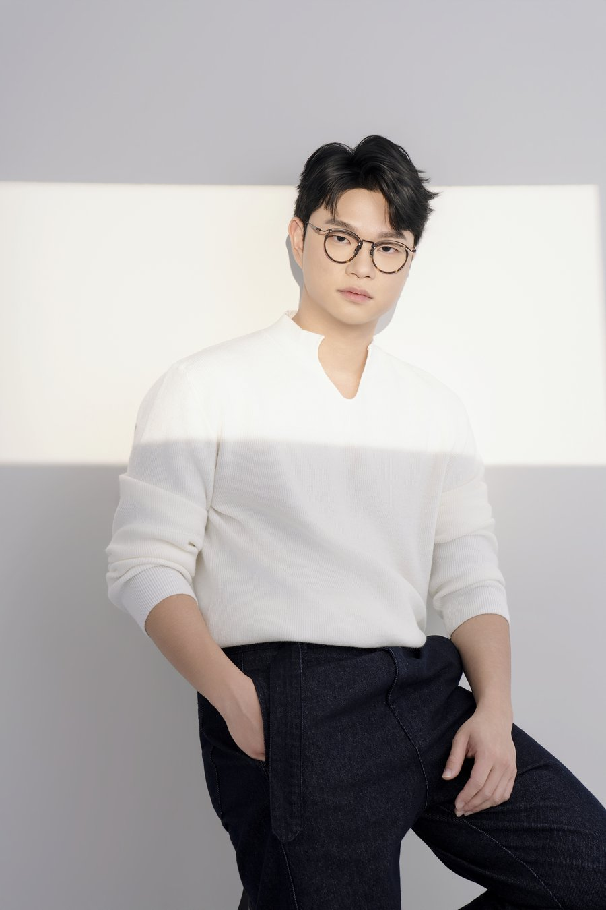
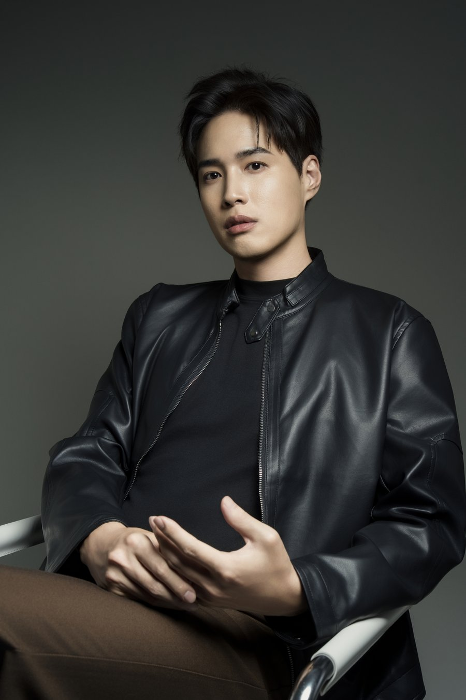
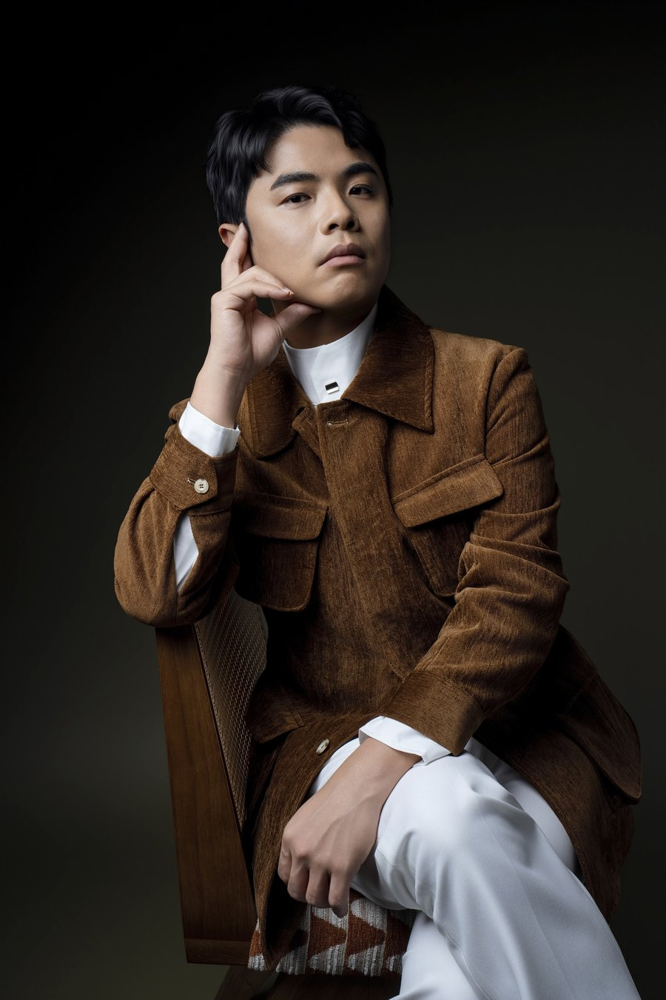

準備轉職，想改變形象
以前每天穿制服，現在轉做業務，需要見客戶、談合作；或是升上主管，開始帶團隊、主持會議，希望自己的形象也能跟上新的職位。
穿平常的衣服怕太隨便，換上西裝又覺得不像自己。我們會先了解您的新工作與需要出席的場合，再從服裝、髮型到整體風格，討論適合的調整方式。
可先了解：角色定位諮詢、衣櫥健檢、形象選品服務
For Men·台中勤美
想換個樣子，卻不知道從哪裡開始？
準備轉職、想脫單、要去約會，或只是想試試不同風格，都可以來找我們聊聊。先了解您平常怎麼穿、喜歡什麼，再一起討論服裝和妝髮怎麼調整。
CHUN.EN 提供穿搭規劃、衣櫥健檢、陪同選購、妝髮造型、型男妝髮課程與形象照，各項服務都能單獨預約。

先看看哪一種情況最像您，了解有哪些服務可以幫上忙。
不確定自己的需求也沒關係，透過官方 LINE 說說您的狀況，我們會依照您的需求給出最合適的建議。
以前每天穿制服，現在轉做業務，需要見客戶、談合作；或是升上主管，開始帶團隊、主持會議，希望自己的形象也能跟上新的職位。
穿平常的衣服怕太隨便，換上西裝又覺得不像自己。我們會先了解您的新工作與需要出席的場合，再從服裝、髮型到整體風格，討論適合的調整方式。
可先了解：角色定位諮詢、衣櫥健檢、形象選品服務
想為見面認真準備，又怕穿得太隨便，或是用力過頭。可以從約會的地點、您喜歡的衣服和平常的整理習慣，討論當天怎麼穿、頭髮怎麼整理，找到穿起來自在的搭配。
可先了解：形象選品服務、日常妝髮造型
喜歡的造型存了不少，真的買衣服時卻不知道怎麼選。想成熟一點、輕鬆一點，或更有個性，都可以先聊聊您喜歡怎麼穿、想改變哪些地方。已經有自己的風格，也能只調整配色、版型或搭配細節。
可先了解：角色定位諮詢、形象策略企劃、形象選品服務
單件看都喜歡，放在一起卻不知道怎麼搭。CHUN.EN 位於台中勤美，衣櫥健檢可以安排顧問到府，盤點您現有的衣服，找出可以重新搭配的組合，再看需要補哪些單品。
台中以外的地區也歡迎詢問，費用會依地點確認。
可先了解：衣櫥健檢
店裡試穿覺得不錯，回家卻搭不上其他衣服。形象選品服務會依身形、穿衣習慣和使用場合挑選款式，需要時由顧問陪同選購，也一起想好新衣服怎麼搭進原本的衣櫥。
可先了解：形象選品服務
有些衣服還穿得下，比例卻和以前不同；以前常穿的正式服裝，現在也不一定用得上。可以重新看版型、長度和您現在常去的場合，調整成適合現在生活的穿法。
可先了解：衣櫥健檢、形象選品服務
想學吹整、修眉或自然的膚色修飾，卻不知道產品和工具怎麼用。型男妝髮課程由講師示範，再由您實際練習，學的是每天出門用得到的整理方法。
可先了解：型男妝髮課程
參加婚禮、朋友聚會、上台致詞，或和重要的人見面，想打扮得好看一點，卻不確定怎麼穿、頭髮該怎麼整理。
可以先告訴我們當天的場合、想穿的衣服，以及喜歡的造型。從服裝搭配到妝髮，都能依這次的需要安排，讓您出門前更有把握。
可先了解：商務妝髮造型、日常妝髮造型、活動妝髮造型、品牌／職業形象照拍攝
想把服裝、妝髮和照片一次規劃好，可以了解 商業視覺整合企劃。
以下每一項都能單獨預約。
型男妝髮課程是 B.room 為男生開的小班課，每梯限 4 人，一堂 4 小時，在台中勤美上課。想學自己吹頭髮、修眉毛，或把底妝畫得自然，都可以在課堂上練習。
認識自己的膚況，學會選底妝、遮黑眼圈與痘印、整理眉型，讓整體看起來有精神，妝感依然自然。
學會吹整與 10 分鐘快速造型，出門前也能輕鬆整理出俐落髮型。
認識髮蠟、髮泥、定型噴霧等產品的差異，學會依髮質與想要的造型選擇，掌握用量與使用方法。
講師示範後，由學員在自己身上實際操作，並由講師逐一調整。課程中也會依上班、見客戶、聚會等場合，調整妝髮的輕重，讓整體和服裝搭得起來。課後能自己完成一套適合日常使用的妝髮。
開課日期列在上方的費用表，報名請透過官方 LINE。
很詳細的解說男生對於自我打扮，從眉型、膚色到髮型都有很詳細的說明，改造完後整個人精緻了許多，非常推薦！型男妝髮課程學員｜Google 評論節錄
男士妝髮包含膚色修飾、眉型與髮型整理，會依服裝、場合和您的喜好調整。想低調自然，或想試試比較有造型感的髮型，都可以在預約時說明。
約會、聚會、面試或上台，都可以預約單次妝髮。商務場合的做法，可以看〈商務妝髮是什麼〉。
底妝輕透 非常自然 且每次都能對應不同場合搭配髮型 男生真的該來試一次看看食品品牌第二代｜Google 評論節錄

以下是男士客戶在 Google 地圖留下的評論，照片是他們的形象照。

專業不是把自己變成另一個人，而是讓原本的自己，用更好的方式被看見。機構工程師｜Google 評論節錄

非常感謝Zoey老師開拍前細心規劃、討論，開拍過程中的專業妝髮及動作指導，讓我獲得一系列專業、優質的形象照，也提升客戶對我的信任。執業律師・事務所所長｜Google 評論節錄

原本自己不懂穿搭，透過Zoey的企劃協助定位 拍攝出自己未來3-5年想要的樣子 而不是現在自己的狀態而已機構工程師｜Google 評論

形象是一個人最直接的名片，感謝Zoey很精細的瞭解想要呈現的需求和服裝造型打造，是一個很值得的投資🤗牙醫師｜Google 評論

當我的形象與內在定位不一致時，最直接的影響就是專業價值常被低估。旅遊平台負責人｜Google 評論節錄
更多男士形象照，可以看 精選作品。
想調整穿搭、為重要場合準備造型，或學會日常整理，都可以透過官方 LINE告訴我們。不確定自己需要什麼，先說說目前的狀況就好。
我們會依需求建議適合的服務，並確認內容、費用、時間與地點。
依約定完成預約付款後，我們就會為您保留時段。
建議提早洽詢：形象諮詢約 2 週、妝髮約 2 到 4 週、形象照約 4 到 6 週。日期比較近，也歡迎先問可以安排的時段。
For Men